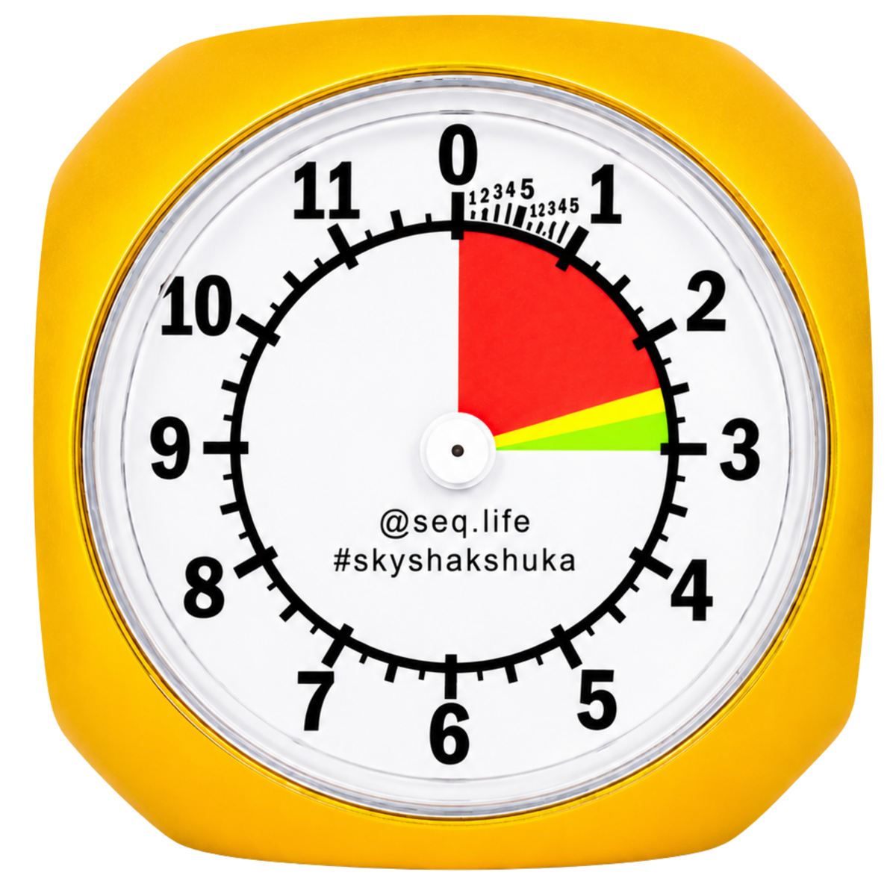

Altimeter Simulation
k ft
k ft

Altitude
12,000 FT
Time
0.0 s
Simulation Settings
Adjust how the descent and repeat cycle behave.
sec
Ready · 12,000 FT → 4,500 FT
Timing: normally, the first 1,000 ft takes 10 seconds and every following 1,000 ft takes 5 seconds. With “Not from exit” selected, the simulation uses 5 seconds per 1,000 ft from the start. Altitudes above 12,000 ft continue around the dial: 13k points to 1, 14k to 2, and so on. The pointer stops at the selected opening altitude.